Percepciones, dinámicas y problemáticas frente al manejo de residuos orgánicos en las calles de Usme
Villa Rosita está en el borde urbano: los cultivos empiezan a pocas cuadras.
El residuo orgánico se genera muy cerca de quien podría usarlo como abono. El recorrido del compost puede ser corto.
Las sobras de comida son un problema real para hogares y comercios.
Casi nadie separa lo orgánico del resto de la basura.
Las personas usarían un sistema para separarlo.
En emprendimiento, primero se valida el problema con usuarios reales. Solo después se valida la solución.
Según la autorización firmada, nadie aparece con su nombre: cada persona tiene un código (E01–E08). Toca una tarjeta para leer todo lo que dijo. Los agricultores se entrevistarán en la fase 2.
7 de 8 personas están insatisfechas con el manejo de residuos del barrio.
3 de 8 ya reutilizan sobras en su casa o negocio, sin ningún programa.
Nadie rechazó la idea. Piden pedagogía, líderes, recolección e incentivo.
Hallazgos de las entrevistas. Cada número indica cuántas de las 8 personas lo mencionaron.
“Aquí en el shut hay un desorden tenaz, porque mandan a los niños… y la riegan.” E01 · Hogar
“Hay más perros que gente acá en el sector.”
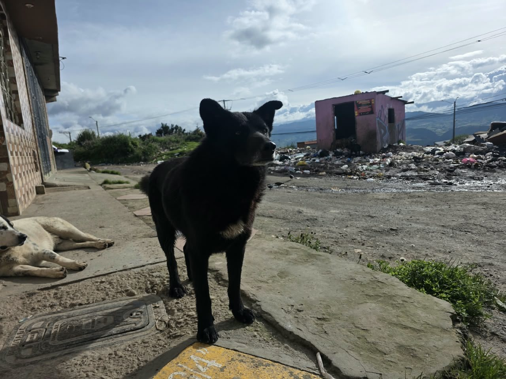
Observado · perro junto al shut“Es una cultura que se puede demorar 100 años.” E02
“¿Qué hacemos tres o cuatro si diez no lo hacen?” E05
“Estamos abandonados por la alcaldía.” E02
“A la larga eso no se pierde.”
“Esas se las molemos y se las echamos a las materas.”
“Se la echo a las maticas, como abono.”
“Folleticos, pósteres… videos en TikTok.”
“Hay asamblea en el salón comunal. Ahí se puede empezar.”
“Si no hay una persona que recoja todos los días, es difícil.”
“Si ya tú me la regalas, ya me motivo.”
También: ver que funciona en otras partes (2 personas) y que sea práctico (2). E01 acepta aportar tiempo o dinero a cambio del beneficio (ver).
“Lo químico enferma a la gente.” E02
“El abono en Colombia se trae de otro país.” E05
“Crecí en el campo. Nosotros ya recogíamos todo eso para echarle a las plantas.” E02
Observación directa del recorrido: 22 fotos y 4 videos analizados por aparte. Cada imagen solo prueba lo que muestra.
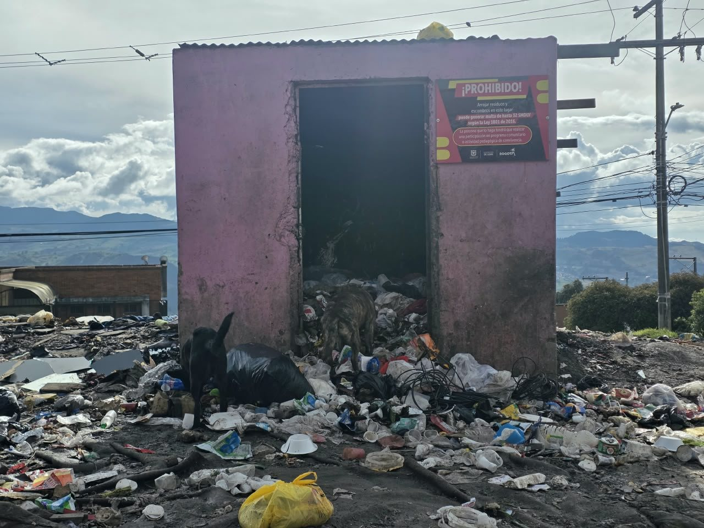
Cartel de multa · puerta abierta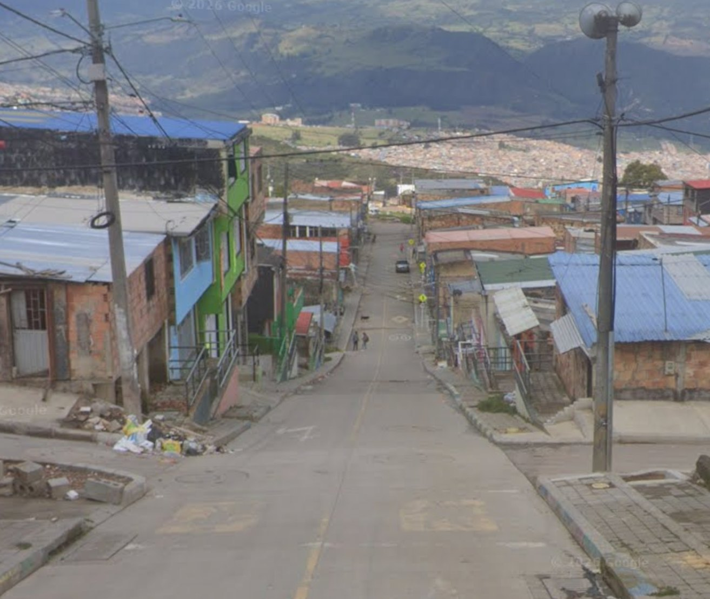
Parte alta · esquina con basura · Street View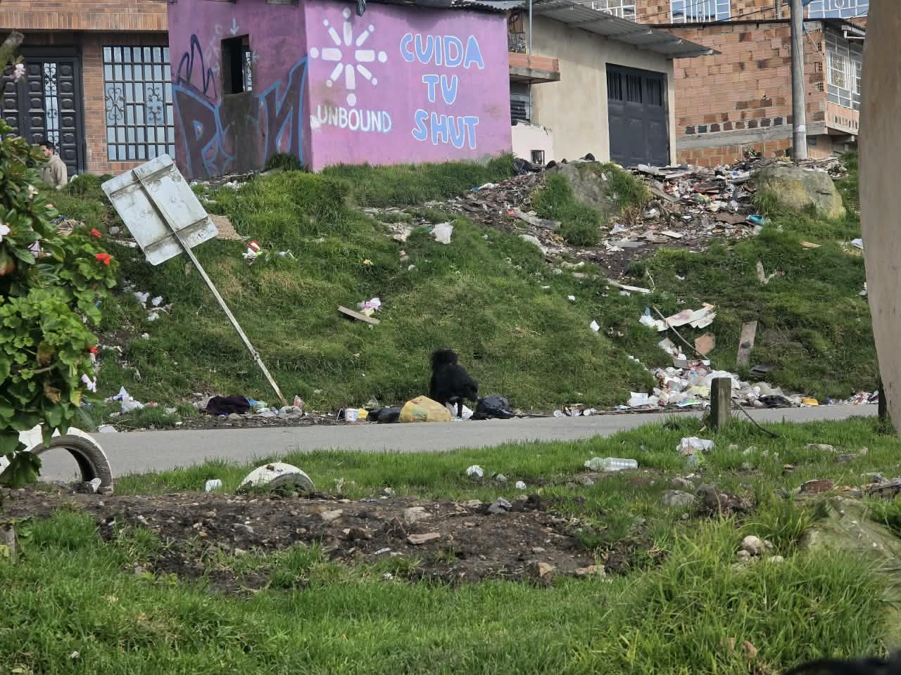
Mural “Cuida tu shut”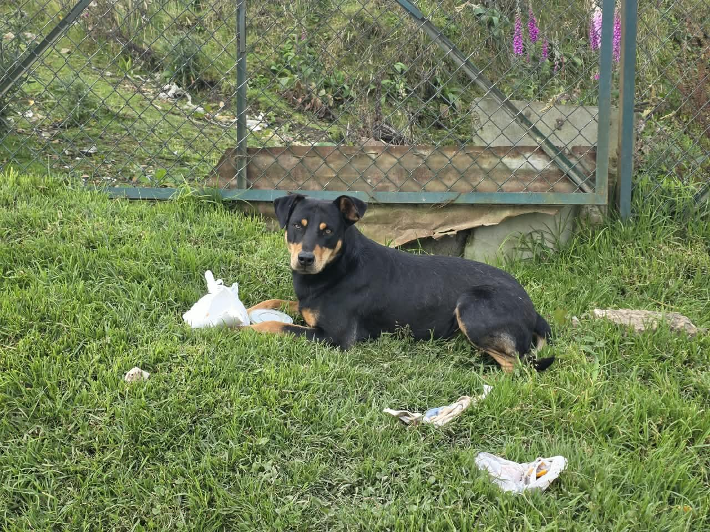
Perro comiendo de un icopor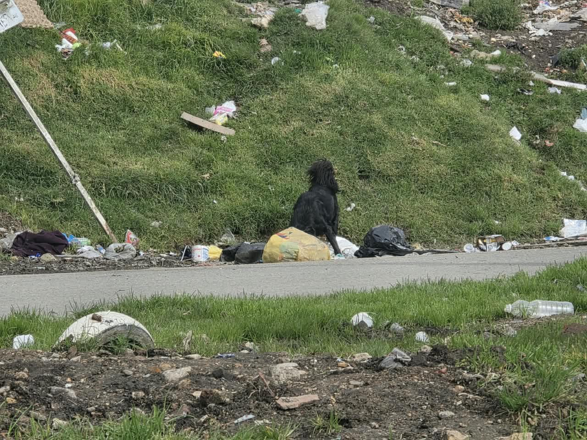
Perro entre bolsas en la ladera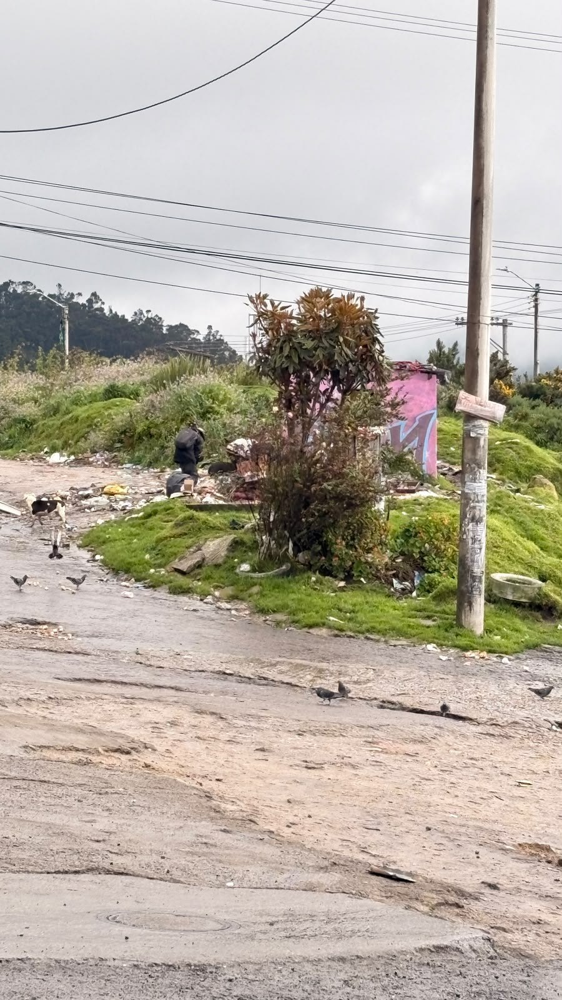
Palomas y perros en el botadero“Los ratoncitos salen de debajo de la basura.”
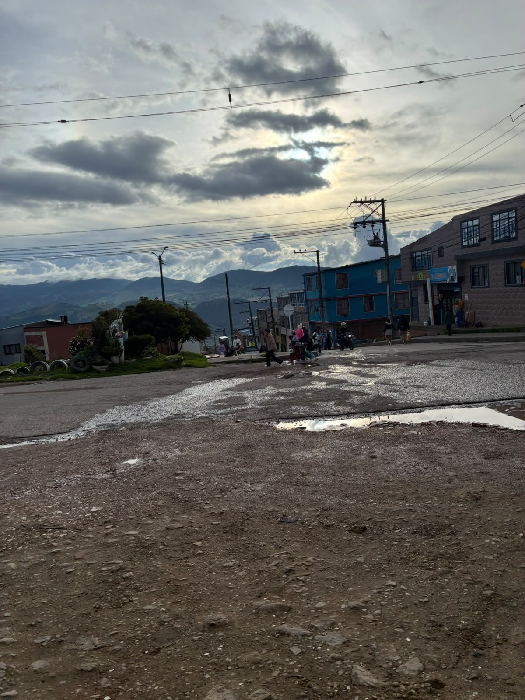
O5 · Vía destapada y charcos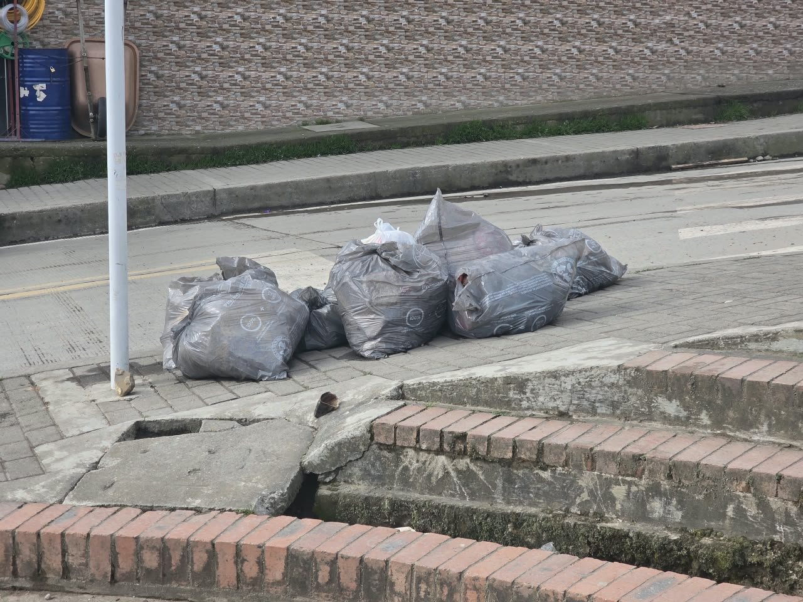
O5 · Bolsas en el andén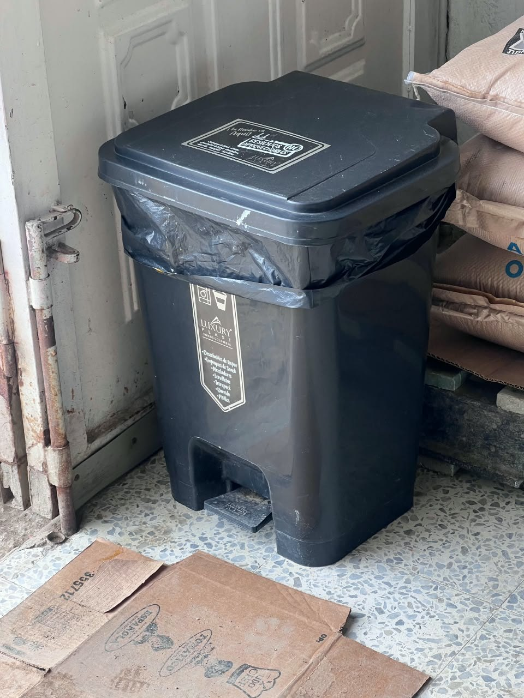
O6 · Caneca de pedal en un local“Una noche antes sacan la basura.”
✓ Visto · bolsas en el andén
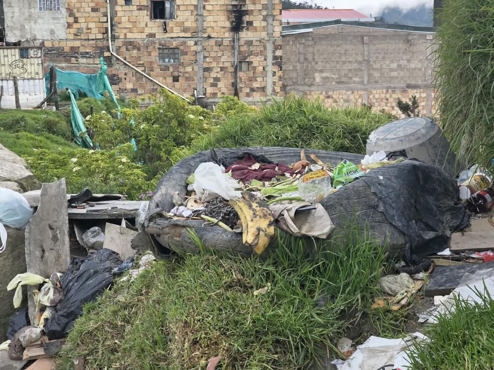
“Todo es un revoltijo.”
✓ Visto · cáscaras con plástico
“Los perros se encargan de romper bolsas.”
✓ Visto · perro entre bolsas
“Cuando llueve se forma un pichal.”
✓ Visto · vía sin pavimentar
Cada casilla indica cuántas frases de esa persona tocan ese tema. Las columnas llenas son temas compartidos por casi todos. Toca cualquier casilla para leer las frases.
Desde la 4.ª entrevista casi no aparecen temas nuevos (97 %). Las 8 entrevistas alcanzaron para entender el problema en este sector.
de coincidencia entre el equipo y un programa de IA que clasificó las frases por separado. Es un acuerdo alto: el resultado no depende de quién clasifica. κ = 0,70.
de coincidencia entre los textos y el audio. Las transcripciones son fieles; dos audios se corrigieron y 212 de 220 frases tienen su minuto exacto para escucharlas.
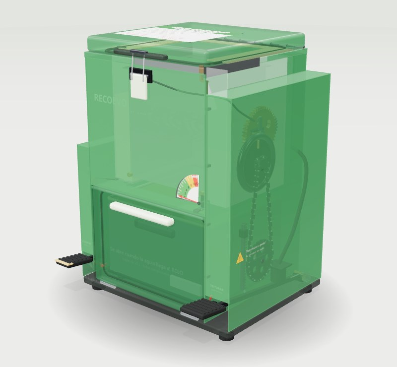
Cómo abonan hoy, cuánto les cuesta y si usarían compost en lugar de químicos.
Cuánto orgánico generan y qué hacen con él. Hasta ahora solo hay un fruver entrevistado.
Lo dicho va de $40.000 a $160.000 al mes. Revisar facturas reales de hogar y de comercio. Ver lo que dijeron
Una persona dice que pasa día de por medio y otra que lleva 3 meses sin pasar. Pedir el horario oficial al operador y compararlo por cuadra. Ver
En algunos hogares y comercios voluntarios, para saber si el cajón de 20 L alcanza y cada cuánto hay que recoger.
Devolver los resultados y compartir un formulario corto que los vecinos escanean para sumar más respuestas.
A las vecinas y vecinos de Villa Rosita, por abrirnos la puerta.